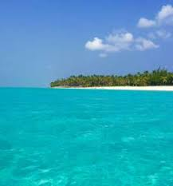
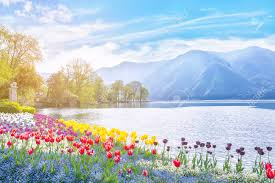

Nature is essential to every aspect of human life and well-being — we want to make sure it’s included in the conversation. People are taking more from nature than it has to give, and as a result, we’re putting our own lives on the line. Nature’s message to humanity is simple: Nature doesn’t need people. People need nature.
Human beings are part of nature. Nature is not dependent on human beings to exist. Human beings, on the other hand, are totally dependent on nature to exist. The growing number of people on the planet and how we live here is going to determine the future of nature. And the future of us. Nature will go on, no matter what. It will evolve. The question is, will it be with us or without us? If nature could talk, it would probably say it doesn’t much matter either way. We must understand there are aspects of how our planet evolves that are totally out of our control. But there are things that we can manage, control and do responsibly that will allow us and the planet to evolve together. We are Conservation International and we need your help. Our movement is dedicated to managing those we can control. Better. Country by country. Business by business. Human by human. We are not about us vs. them. It doesn’t matter if you’re an American, a Canadian, or a Papua New Guinean. You don’t even have to be particularly fond of the ocean or have a soft spot for elephants. This is simply about all of us coming together to do what needs to be done. Because if we don’t, nature will continue to evolve. Without us. Here’s to the future. With humans. THANK YOU
.jpg)
An ocean is a major body of saline water, and a principal component of the hydrosphere. Approximately 71% of the Earth's surface (an area of some 361 million square kilometers) is covered by ocean, a continuous body of water that is customarily divided into several principal oceans and smaller seas. More than half of this area is over 3,000 meters (9,800 feet) deep. Average oceanic salinity is around 35 parts per thousand (ppt) (3.5%), and nearly all seawater has a salinity in the range of 30 to 38 ppt. Though generally recognized as several 'separate' oceans, these waters comprise one global, interconnected body of salt water often referred to as the World Ocean or global ocean.[33][34] This concept of a global ocean as a continuous body of water with relatively free interchange among its parts is of fundamental importance to oceanography.[35] The major oceanic divisions are defined in part by the continents, various archipelagos, and other criteria: these divisions are (in descending order of size) the Pacific Ocean, the Atlantic Ocean, the Indian Ocean, the Southern Ocean, and the Arctic Ocean. Smaller regions of the oceans are called seas, gulfs, bays and other names. There are also salt lakes, which are smaller bodies of landlocked saltwater that are not interconnected with the World Ocean. Two notable examples of salt lakes are the Aral Sea and the Great Salt Lake.
A lake (from Latin word lacus) is a terrain feature (or physical feature), a body of liquid on the surface of a world that is localized to the bottom of basin (another type of landform or terrain feature; that is, it is not global) and moves slowly if it moves at all. On Earth, a body of water is considered a lake when it is inland, not part of the ocean, is larger and deeper than a pond, and is fed by a river.[36][37] The only world other than Earth known to harbor lakes is Titan, Saturn's largest moon, which has lakes of ethane, most likely mixed with methane. It is not known if Titan's lakes are fed by rivers, though Titan's surface is carved by numerous river beds. Natural lakes on Earth are generally found in mountainous areas, rift zones, and areas with ongoing or recent glaciation. Other lakes are found in endorheic basins or along the courses of mature rivers. In some parts of the world, there are many lakes because of chaotic drainage patterns left over from the last Ice Age. All lakes are temporary over geologic time scales, as they will slowly fill in with sediments or spill out of the basin containing them.
 panda.org